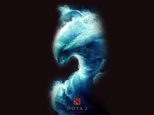

defense of the ancients. DOTA 2 2020/01/01 ubpdate

DescriptionDota 2 is a multiplayer online battle arena video game developed and published by Valve. The game is a sequel to Defense of the Ancients, which was a community-created mod for Blizzard Entertainment's Warcraft III: Reign of Chaos and its expansion pack, The Frozen Throne.
According to the authors of the research, real-time strategy games such as StarCraft or Dota can improve one's ability to think on the fly and learn from mistakes. Additionally, volunteers who played the most difficult version of StarCraft had the best results in the post-game psychological tests.
There are 115 characters to choose from, giving DotA 2 the infamous representation of a complex game with a sharp learning curve. DotA 2 is a free-to-play online game with violence and language created by Valve Corporation. There is no official ESRB rating for this game
Here are some reasons why i like to play DotA 2. You can win games you are horribly losing because there is always a chance to win. ...
სხვა:
DescriptionDota 2 is a multiplayer online battle arena video game developed and published by Valve. The game is a sequel to Defense of the Ancients, which was a community-created mod for Blizzard Entertainment's Warcraft III: Reign of Chaos and its expansion pack, The Frozen Throne.
According to the authors of the research, real-time strategy games such as StarCraft or Dota can improve one's ability to think on the fly and learn from mistakes. Additionally, volunteers who played the most difficult version of StarCraft had the best results in the post-game psychological tests.
There are 115 characters to choose from, giving DotA 2 the infamous representation of a complex game with a sharp learning curve. DotA 2 is a free-to-play online game with violence and language created by Valve Corporation. There is no official ESRB rating for this game
Here are some reasons why i like to play DotA 2. You can win games you are horribly losing because there is always a chance to win. ...
კომებტარები:5
ლაიქები:6
სხვა: